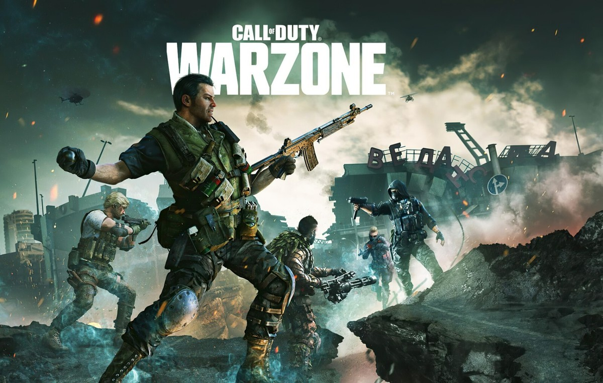

Call of Duty: Warzone is a free-to-play battle royale game developed by Infinity Ward and published by Activision. It takes place in the same universe as the Call of Duty franchise, featuring intense firefights and strategic gameplay.
The game allows you to fully customise your loadout, with a wide range of weapons, attachments, and cosmetic options to suit your playstyle.
Call of Duty: Warzone is available on PC, PlayStation, and Xbox.

There are many techniques to master in terms of movement in Warzone. One of the most powerful is sliding. A common combination used by pros is a Sprint-Slide-Jump. This makes you incredibly difficult to track, making you harder to hit
Another technique is dropshotting. This is where you encounter an enemy and quickly "drop" to the floor into prone. Not many people expect this move, so they will fire where they expect you to be, which is stood up.
Check out this video for a more comprehensive guide to movement in Warzone:
Shooting in Warzone requires precision and practice. Focus on maintaining accuracy while moving, and always be aware of your surroundings.
One of the most important things to master is recoil control. Each weapon has its own unique recoil pattern, so it's crucial to practice with your preferred weapons to learn how to manage it effectively. A commonly used tool is an aim trainer, which is an external program/game used to practice weapon spray and recoil management.
Focus your loadout on reducing recoil and improving stability.
Check out this video for a more comprehensive guide to shooting in Warzone:
Always try to keep fights at a medium to long range whenever possible. This will make enemies easier to hit, and reduce the risk of you being hit yourself. At this range, rifles are most effective.
Later in a game, having the high ground can be a significant advantage. However, getting trapped on high ground by the storm can be dangerous, as you will have to parachute, exposing yourself to the enemy.
Check out this video for a more comprehensive guide to positioning in Warzone:
Currenlty, the most powerful primary weapon in warzone is the MK35 ISR.
Attachments:
For secondary weapons, currently the best option is the 1911, due to its high damage and reliability in close quarters.
Attachments:
Try rebinding your crouch button to a more accessible key.
Try to position yourself in areas that are less likely to be affected by the storm, and always keep an eye on the storm's movement.